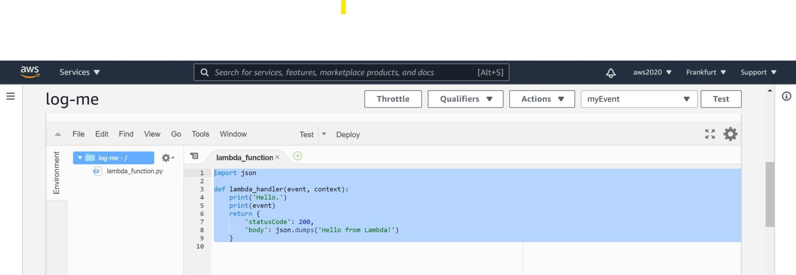

This was first published on https://www.dbi-services.com/blog/amazon-aurora-calling-a-lambda-from-a-trigger/ (2020-12-14)
Republishing here for new followers. The content is related to the versions available at the publication date.
.
You may want your RDS database to interact with other AWS services. For example, send a notification on a business or administration situation, with a “push” method rather than a “pull” one from a Cloud watch alert. You may even design this call to be triggered on database changes. And Amazon Aurora provides this possibility by running a lambda from the database through calling mysql.lambda_async() from a MySQL trigger. This is an interesting feature but I think that it is critical to understand how it works in order to use it correctly.
This is the kind of feature that looks very nice on a whiteboard or powerpoint: the DML event (like an update) runs a trigger that calls the lambda, all event-driven. However, this is also dangerous: are you sure that every update must execute this process? What about an update during an application release, or a dump import, or a logical replication target? Now imagine that you have a bug in your application that has set some wrong data and you have to fix it in emergency in the production database, under stress, with manual updates and aren’t aware of that trigger, or just forget about it in this situation… Do you want to take this risk? As the main idea is to run some external service, the consequence might be very visible and hard to fix, like spamming all your users, or involuntarily DDoS a third-tier application.
I highly encourage to encapsulate the DML and the call of lambda in a procedure that is clearly named and described. For example, let’s take a silly example: sending a “your address has been changed” message when a user updates his address. Don’t put the “send message” call in an AFTER UPDATE trigger. Because the UPDATE semantic is to update. Not to send a message. What you can do is write a stored procedure like UPDATE_ADDRESS() that will do the UPDATE, and call the “send message” lambda. You may even provide a boolean parameter to enable or not the sending of the message. Then, the ones who call the stored procedure know what will happen. And the one who just do an update,… will just do an update. Actually, executing DML directly from the application is often a mistake. A database should expose business-related data services, like many other components of your application architecture, and this is exactly the goal of stored procedures.
I’m sharing here some tests on calling lambda from Aurora MySQL.
A lambda is not a simple procedure that you embed in your program. It is a service and you have to control the access to it:
Here is my lambda which just logs the event for my test: 
import json
def lambda_handler(event, context):
print('Hello.')
print(event)
return {
'statusCode': 200,
'body': json.dumps('Hello from Lambda!')
}
drop database if exists demo;
create database demo;
use demo;
drop table if exists t;
create table t ( x int, y int );
insert into t values ( 1, 1 );
I have a simple table here, with a simple row.
delimiter $$
create trigger t_bufer before update on t for each row
begin
set NEW.y=OLD.x;
call mysql.lambda_async(
'arn:aws:lambda:eu-central-1:802756008554:function:log-me',
concat('{"trigger":"t_bufer","connection":"',connection_id(),'","old": "',OLD.x,'","new":"',NEW.x,'"}'));
end;
$$
delimiter ;
This is my trigger which calls my lambda on an update with old and new value in the message.
MYSQL_PS1="Session 1 \R:\m:\s> " mysql -v -A --host=database-1.cluster-ce5fwv4akhjp.eu-central-1.rds.amazonaws.com --port=3306 --user=admin --password=ServerlessV2
I connect a first session , displaying the time and session in the prompt.
Session 1 23:11:55> use demo;
Database changed
Session 1 23:12:15> truncate table t;
--------------
truncate table t
--------------
Query OK, 0 rows affected (0.09 sec)
Session 1 23:12:29> insert into t values ( 1, 1 );
--------------
insert into t values ( 1, 1 )
--------------
Query OK, 1 row affected (0.08 sec)
this just resets the testcase when I want to re-run it.
Session 1 23:12:36> start transaction;
--------------
start transaction
--------------
Query OK, 0 rows affected (0.07 sec)
Session 1 23:12:48> update t set x = 42;
--------------
update t set x = 42
--------------
Query OK, 1 row affected (0.11 sec)
Rows matched: 1 Changed: 1 Warnings: 0
Session 1 23:12:55> rollback;
--------------
rollback
--------------
Query OK, 0 rows affected (0.02 sec)
I updated one row, and rolled back my transaction. This is to show that you must be aware that calling a lambda is out of the ACID protection of relational databases. The trigger is executed during the update, without knowing if the transaction will be committed or not (voluntarily or because an exception is encountered). When you do only things in the database (like writing into another table) there is no problem because this happens within the transaction. If the transaction is rolled back, all the DML done by the triggers are rolled back as well. Even if they occurred, nobody sees their effect, except the current session, before the whole transaction is committed.
But when you call a lambda, synchronously or asynchronously, the call is executed and its effect will not be rolled back if your transaction does not complete. This can be ok in some cases, if what you execute is related to the intention of the update and not its completion. Or you must manage this exception in your lambda, maybe by checking in the database that the transaction occurred. But in that case, you should really question your architecture (a call to a service, calling back to the caller…)
So… be careful with that. If your lambda is there to be executed when a database operation has been done, it may have to be done after the commit, in the procedural code that has executed the transaction.
This non-ACID execution was the important point I wanted to emphasize, so you can stop here if you want. This other test is interesting for people used to Oracle Database only, probably. In general, nothing guarantees that a trigger is executed only once for the triggering operation. What we have seen above (rollback) can be done internally when a serialization exception is encountered and the database can retry the operation. Oracle Database has non-blocking reads and this is not only for SELECT but also for the read phase of an UPDATE. You may have to read a lot of rows to verify the predicate and update only a few ones, and you don’t want to lock all the rows read but only the ones that are updated. Manually, you would do that with a serializable transaction and retry in case you encounter a rows that have been modified between your MVCC snapshot and the current update time. But at statement level, Oracle does that for you.
It seems that it does not happen in Aurora MySQL and PostgreSQL, as the locking for reads is more aggressive, but just in case I tested the same scenario where an update restart would have occurred in Oracle.
Session 1 23:13:00> start transaction;
--------------
start transaction
--------------
Query OK, 0 rows affected (0.06 sec)
Session 1 23:13:09> update t set x = x+1;
--------------
update t set x = x+1
--------------
Query OK, 1 row affected (0.02 sec)
Rows matched: 1 Changed: 1 Warnings: 0
Session 1 23:13:16> select * from t;
--------------
select * from t
--------------
+------+------+
| x | y |
+------+------+
| 2 | 1 |
+------+------+
1 row in set (0.01 sec)
Session 1 23:13:24>
I have started a transaction that increased the value of X, but the transaction is still open. What I do next is from another session.
This is session 2:
Session 2 23:13:32> use demo;
Database changed
Session 2 23:13:34>
Session 2 23:13:35> select * from t;
--------------
select * from t
--------------
+------+------+
| x | y |
+------+------+
| 1 | 1 |
+------+------+
1 row in set (0.01 sec)
Of course, thanks to transaction isolation, I do not see the uncommitted change.
Session 2 23:13:38> update t set x = x+1 where x > 0;
--------------
update t set x = x+1 where x > 0
--------------
At this step, the update hangs on the locked row.
Now back in the first session:
Session 1 23:13:49>
Session 1 23:13:50>
Session 1 23:13:50>
Session 1 23:13:50> commit;
--------------
commit
--------------
Query OK, 0 rows affected (0.02 sec)
I just commited my change here, so X has been increased to the value 2.
And here is what happened in my seconds session, with the lock released by the first session:
Query OK, 1 row affected (11.42 sec)
Rows matched: 1 Changed: 1 Warnings: 0
Session 2 23:13:58> commit;
--------------
commit
--------------
Query OK, 0 rows affected (0.01 sec)
Session 2 23:14:10> select * from t;
--------------
select * from t
--------------
+------+------+
| x | y |
+------+------+
| 3 | 2 |
+------+------+
1 row in set (0.01 sec)
Session 2 23:14:18>
This is the correct behavior. Even if a select sees the value of X=1 the update cannot be done until the first session has committed its transaction. This is why it waited, and it has read the committed value of X=2 which is then incremented to 3.
And finally here is what was logged by my lambda, as a screenshot and as text:
2020-12-13T23:12:55.558+01:00 START RequestId: 39e4e41f-7853-4b11-a12d-4a3147be3fc7 Version: $LATEST 2020/12/13/[$LATEST]25e73c8c6f9e4d168fa29b9ad2ba76d8
2020-12-13T23:12:55.561+01:00 Hello. 2020/12/13/[$LATEST]25e73c8c6f9e4d168fa29b9ad2ba76d8
2020-12-13T23:12:55.561+01:00 {'trigger': 't_bufer', 'connection': '124', 'old': '1', 'new': '42'} 2020/12/13/[$LATEST]25e73c8c6f9e4d168fa29b9ad2ba76d8
2020-12-13T23:12:55.562+01:00 END RequestId: 39e4e41f-7853-4b11-a12d-4a3147be3fc7 2020/12/13/[$LATEST]25e73c8c6f9e4d168fa29b9ad2ba76d8
2020-12-13T23:12:55.562+01:00 REPORT RequestId: 39e4e41f-7853-4b11-a12d-4a3147be3fc7 Duration: 1.16 ms Billed Duration: 2 ms Memory Size: 128 MB Max Memory Used: 51 MB 2020/12/13/[$LATEST]25e73c8c6f9e4d168fa29b9ad2ba76d8
2020-12-13T23:13:16.620+01:00 START RequestId: 440128db-d6de-4b2c-aa98-d7bedf12a3d4 Version: $LATEST 2020/12/13/[$LATEST]25e73c8c6f9e4d168fa29b9ad2ba76d8
2020-12-13T23:13:16.624+01:00 Hello. 2020/12/13/[$LATEST]25e73c8c6f9e4d168fa29b9ad2ba76d8
2020-12-13T23:13:16.624+01:00 {'trigger': 't_bufer', 'connection': '124', 'old': '1', 'new': '2'} 2020/12/13/[$LATEST]25e73c8c6f9e4d168fa29b9ad2ba76d8
2020-12-13T23:13:16.624+01:00 END RequestId: 440128db-d6de-4b2c-aa98-d7bedf12a3d4 2020/12/13/[$LATEST]25e73c8c6f9e4d168fa29b9ad2ba76d8
2020-12-13T23:13:16.624+01:00 REPORT RequestId: 440128db-d6de-4b2c-aa98-d7bedf12a3d4 Duration: 1.24 ms Billed Duration: 2 ms Memory Size: 128 MB Max Memory Used: 51 MB 2020/12/13/[$LATEST]25e73c8c6f9e4d168fa29b9ad2ba76d8
2020-12-13T23:13:58.156+01:00 START RequestId: c50ceab7-6e75-4e43-b77d-26c1f6347fec Version: $LATEST 2020/12/13/[$LATEST]25e73c8c6f9e4d168fa29b9ad2ba76d8
2020-12-13T23:13:58.160+01:00 Hello. 2020/12/13/[$LATEST]25e73c8c6f9e4d168fa29b9ad2ba76d8
2020-12-13T23:13:58.160+01:00 {'trigger': 't_bufer', 'connection': '123', 'old': '2', 'new': '3'} 2020/12/13/[$LATEST]25e73c8c6f9e4d168fa29b9ad2ba76d8
2020-12-13T23:13:58.160+01:00 END RequestId: c50ceab7-6e75-4e43-b77d-26c1f6347fec 2020/12/13/[$LATEST]25e73c8c6f9e4d168fa29b9ad2ba76d8
2020-12-13T23:13:58.160+01:00 REPORT RequestId: c50ceab7-6e75-4e43-b77d-26c1f6347fec Duration: 0.91 ms Billed Duration: 1 ms Memory Size: 128 MB Max Memory Used: 51 MB 2020/12/13/[$LATEST]25e73c8c6f9e4d168fa29b9ad2ba76d8
First, we see at 23:12:55 the update from X=1 to X=42 that I rolled back later. This proves that the call to lambda is not transactional. It may sound obvious but if you come from Oracle Database you would have used Advanced Queuing where the queue is stored in a RDBMS table and then benefit from sharing the same transaction as the submitter.
My update occurred at 23:12:48 but remember that those calls are asynchronous so the log happens a bit later.
Then there was my second test where I updated, at 23:13:09, X from 1 to 2 and we see this update logged at 23:13:16 which is after the update, for the asynchronous reason, but before the commit which happened at 23:13:50 according to my session log above. Then no doubt that the execution of the lambda does not wait for the completion of the transaction that triggered it.
And then the update from the session 2 which was executed at 23:13:38 but returned at 23:13:50 as it was waiting for the first session to end its transaction. The lambda log at 23:13:58 shows it and shows that the old value is X=2 which is expected as the update was done after the first session change. This is where, in Oracle, we would have seen two entries: one updating from X=1, because this would have been read without lock, and then rolled back to restart the update after X=2. But we don’t have this problem here as MySQL acquires a row lock during the read phase.
However, nothing guarantees that there are no internal rollback + restart. And anyway, rollback can happen for many reasons and you should think, during design, whether the call to the lambda should occur for DML intention or DML completion. For example, if you use it for some event sourcing, you may accept the asynchronous delay, but you don’t want to receive an event that actually didn’t occur.
{kind=link}
{kind=link}